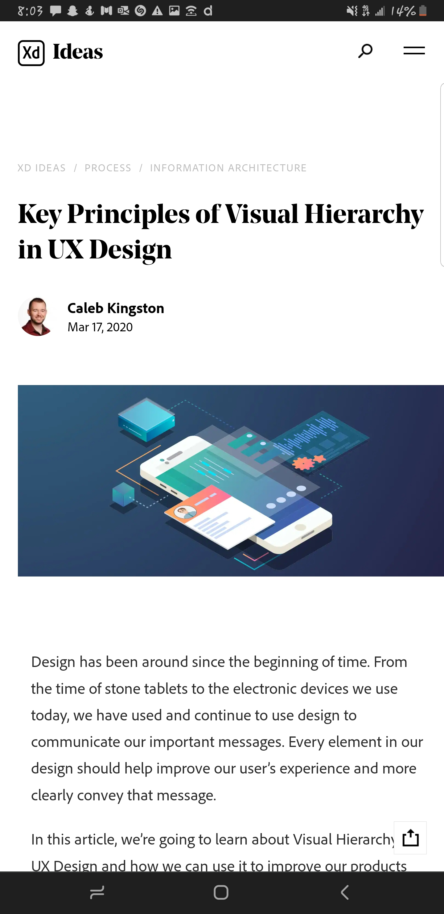
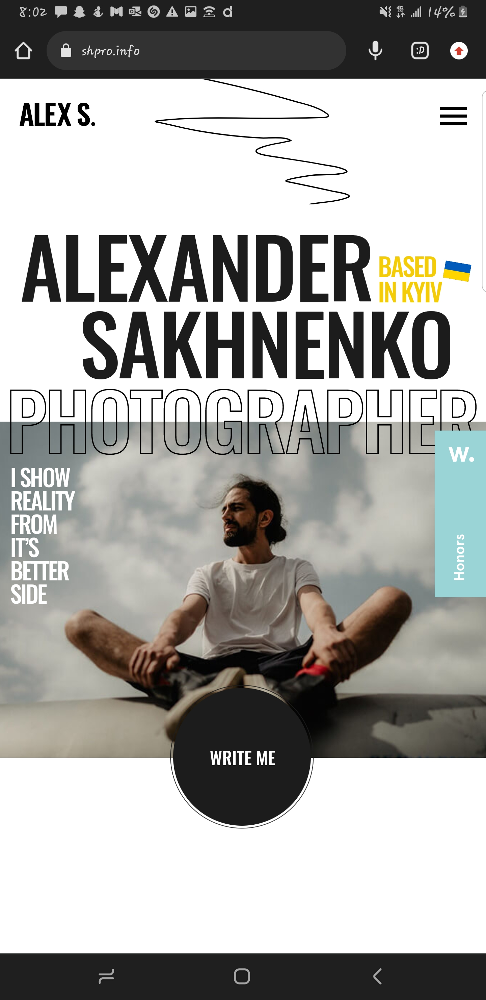

Contrast
Animepahe
https://animepahe.ru/
The dark themed page made the information with the peach-like color stand out.
The difference in contraste between these two themes made it as if the information was being pushed to
me, and this trend continues throughout the page
White Space and Clean Design
Caleb Kingston (Adobe XD)
Key
Principles of Visual Hierarchy in UX Design

I so much love the minimalistic design of this page, as it implements the use of white space to visually
creating a tranquil atmosphere.
The white space made the contents easy to read and see alot of information at once free from
distractions. The white space also made the CTA buttons stand out.
Visual Hierarchy
Alex S.
https://shpro.info/

This site is one of the most impressive I have ever seen. It displayed so much artsy and photographic
contents in a very organized fun way that passes information.
Special attention was payed to visual heirarchy here in font size, color, positioning, transitions,
making you grab the information as you scroll. I also noticed that the content of the page(including
images, fonts, size, color, symbols) at a particular time are all related, Making it easier to percieve
the information passed across.